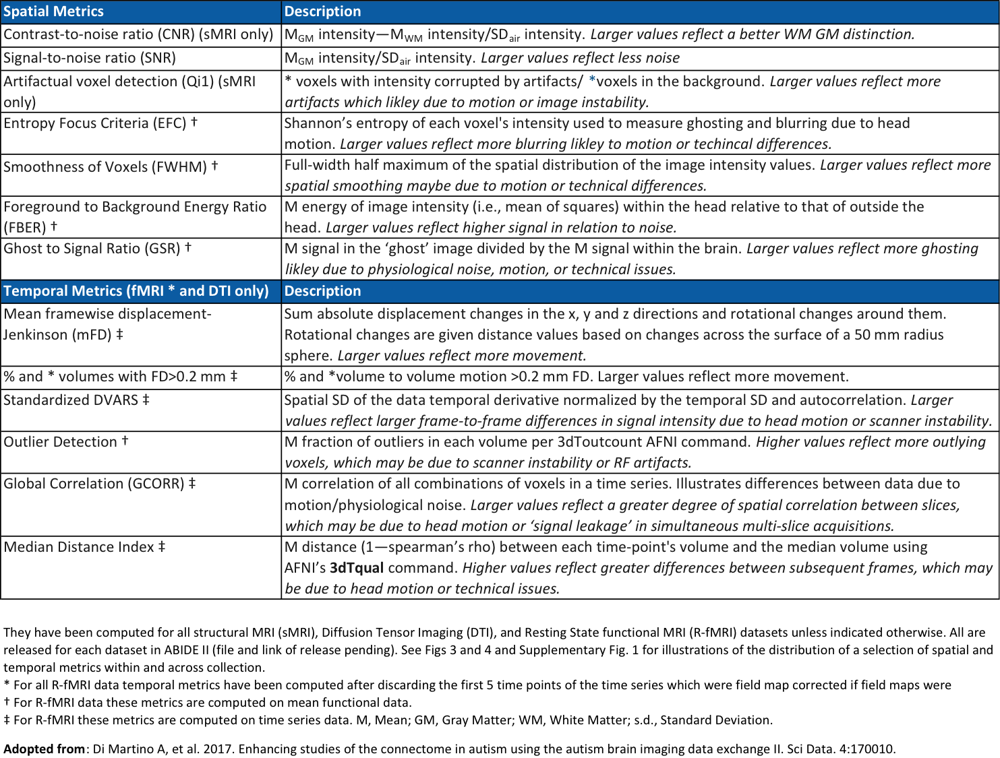
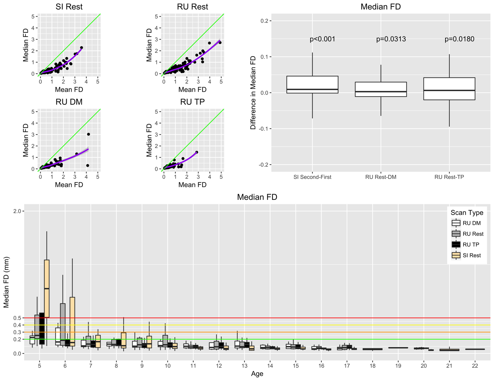
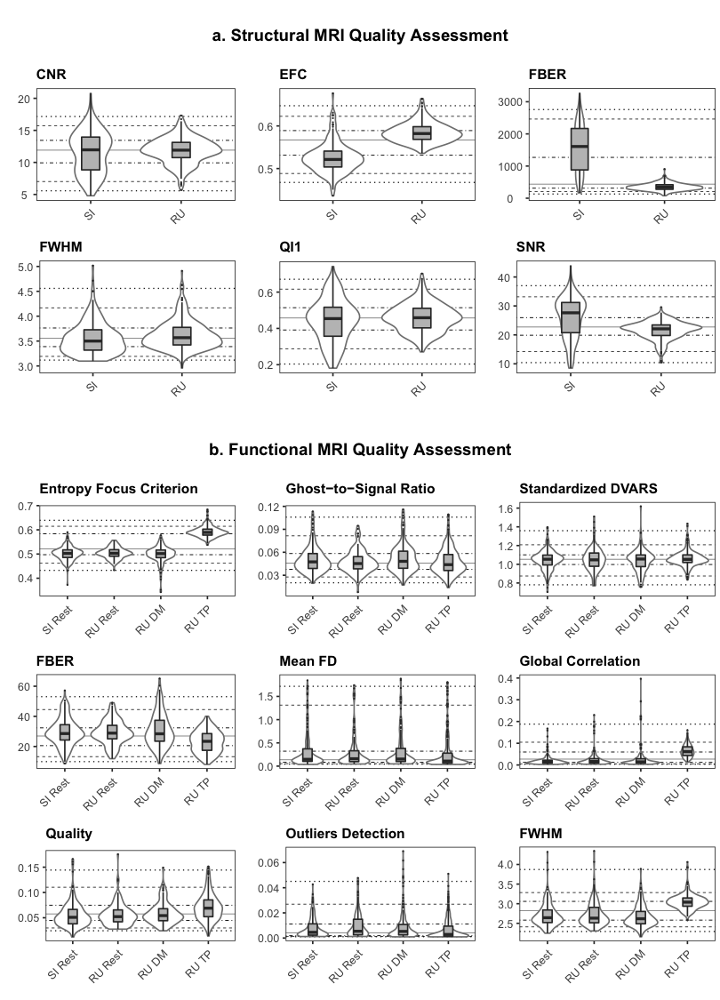
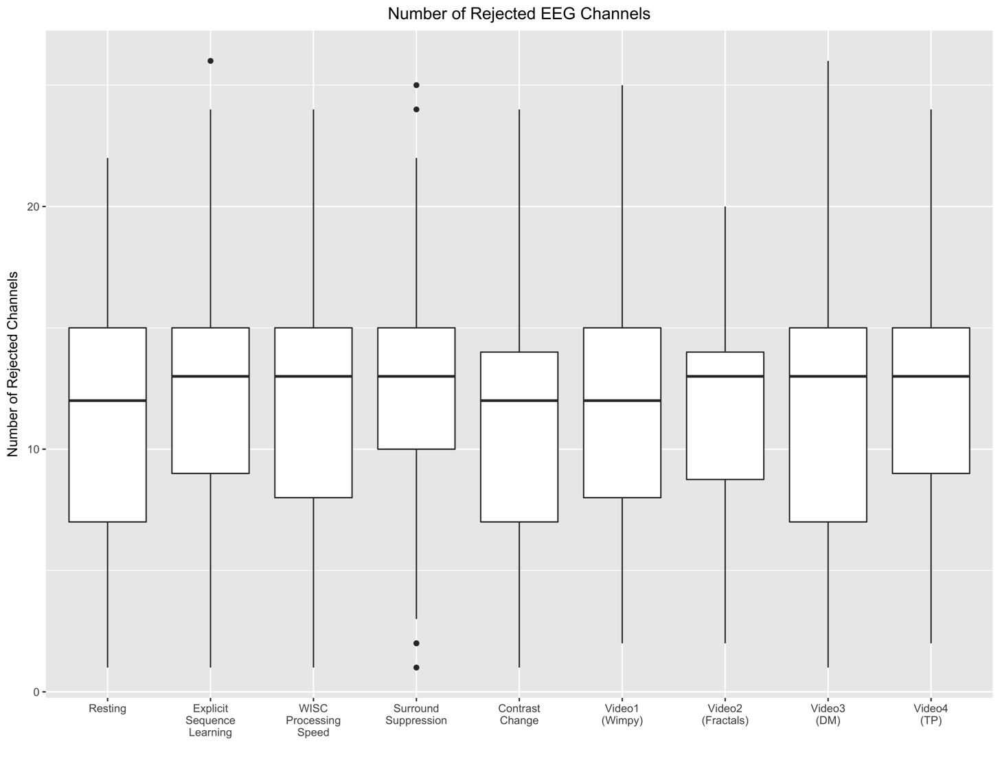

Data Quality¶
Consistent with policies established through our prior data generation and sharing initiatives (i.e., FCP/INDI (Mennes et al. 2013); NKI-Rockland Sample (Nooner et al. 2012)), all imaging datasets collected through the HBN are being made available to users - regardless of data quality. This decision is justified by a lack of consensus in the imaging community on what constitutes “good” or “poor” quality data. Also, “lower quality” datasets can facilitate the development of artifact correction techniques and of evaluating the impact of such real-world confounds on reliability and reproducibility. Given the range of clinical presentations in the HBN, the inclusion of datasets of varying qualities creates a unique opportunity to test for associations with participant-related variables of interest beyond age and hyperactivity (e.g., anxiety, autistic traits).
MRI Data¶
Consistent with recent major FCP/INDI data releases (i.e., the Consortium for Reliability and Reproducibility [CoRR](Zuo et al. 2014), Autism Brain Imaging Data Exchange 2 [ABIDE 2](Di Martino et al. 2017)), we made use of the Preprocessed Connectome Project Quality Assurance Protocol (QAP; Shehzad et al., 2013) to assess data quality for core MRI data modalities (i.e., functional MRI, morphometry MRI and diffusion MRI). The QAP includes a broad range of quantitative measures that have been proposed for assessing image data quality (see table below for list of measures and their definitions, adapted from (Di Martino et al. 2017)).
Given commonly cited concerns about head motion during MRI scans, particularly during resting state fMRI scans, age-related differences in motion were examined. Head motion was quantified using frame-wise displacement (FD), which is calculated using root mean square deviation(Jenkinson et al. 2002). Mean FD is commonly used to evaluate the impact of movement on a dataset (Power et al. 2015), but it cannot distinguish between occasional large movements and frequent smaller movements, the effects of the former being likely easier to fix using scrubbing or an volume censoring methods. Consistent with this concern, the following figure demonstrates a nonlinear relationship between mean FD and median FD, with the latter providing a better indication of the amount of the data that can be retained after movement correction (e.g., volume censoring).
Consistent with prior work (Power et al. 2012), both sites (the 1.5 Tesla mobile scanner in Staten Island and the 3 T fixed scanner at Rutgers University) exhibited negative associations between age and head motion for all functional scan types, with children between ages 5 and 8 exhibiting the greatest levels of movement. Median FD tended to be higher during the second half (5 minutes) of the resting state scan than during the first half; this observation resulted in our decision to split the scan into two 5-minute scans. As predicted by recent work highlighting the advantages of naturalistic viewing to minimize head motion, we found that head motion was significantly reduced during each of the movie-watching scan sessions (“Despicable Me,” “The Present”) relative to rest.
Beyond the examination of temporal characteristics of the HBN data, we also applied the structural measures included in the PCP QA to each of the core data types collected (functional, diffusion, morphometry). See figure below for a subset of these measures. More information about the quality control process used for HBN MRI data can be found at the PCP Assurance Protocol webpage.
Handling Head Motion in MRI Data¶
Head motion presents an unavoidable challenge for developmental and clinical imaging, regardless of MRI modality (fMRI, dMRI, sMRI). Arguably, the most basic strategy for handling motion, short of applying an uncomfortable motion-restricting apparatus, is limiting analyses to high-quality datasets. The Brain Genomic Superstruct data release is an excellent example of the utility of large-scale datasets in supporting such a strategy, as 1570 datasets were selected for analyses from a pool of 3000 individuals following rigorous quality control (Holmes et al. 2015). A limitation of this strategy for psychiatric data is that many phenotypes of interest are inherently more prone to head motion (e.g., children under 9, those with Attention-Deficit/Hyperactivity Disorder), especially those with higher levels of symptomatology. Compounding the downsides of discarding data are the increased costs associated with the recruitment and phenotyping of clinical populations.
For functional MRI, an alternative strategy is to statistically correct the data for movement-induced intensity fluctuations, or remove offending time frames altogether (Power et al. 2015). This can be accomplished by a number of means, ranging from regressing a model of movement from the data (e.g., spike regression (Satterthwaite et al. 2013)), removing the contributions of motion-related spatial patterns from the data (AROMA (Pruim et al. 2015)), attenuating motion spikes using a squashing function, removing offending frames, zeroing out offending frames, or deleting offending frames followed by interpolation. More generalized correction approaches, such as global signal regression and forms of white matter and cerebrospinal fluid regression (e.g., tCompCor, aCompCor (Behzadi et al. 2007; Chai et al. 2012)) can also help to account for motion artifacts. While there is no consensus approach to date, there is a growing literature focused on providing benchmark evaluations of these approaches, as well as their relative merits and weaknesses (e.g., see (Ciric et al. 2017)(Yan et al. 2013)), that can be used to help select among these corrections.
More broadly, group-level statistical corrections can be used to account for the contributions of motion-related artifacts to associations revealed through data analysis (Satterthwaite et al. 2013). In the case of functional MRI, this can be accomplished by including motion parameters as a statistical covariate at the group level. Given the trait nature of head motion (Zuo et al. 2014), some have advocated for using fMRI-derived motion parameters in structural analysis as well. Alternatively, accounting for full-brain differences in measures of interest at the group-level has been shown to be a potentially valuable approach to minimizing the deleterious effects of motion, particularly for fMRI (Yan et al. 2013).
It is our hope that the breadth of the Healthy Brain Network dataset will provide a practical perspective of the challenges of motion for various domains of illness and help to stimulate continued development and testing of novel correction strategies.
EEG Data¶
For each of the EEG acquisitions included, the figure below depicts the number of channels rejected based on the data distribution and variance of channels (threshold: > 3 standard deviations), as implemented in EEGLAB's pop_rejchan.m function (Delorme and Makeig 2004).


- Home
- Link to Manuscript
- Project Plan
- Data Release Timeline
- Release Notes
- Fixes and Updates
- Inclusion/Exclusion Criteria
- Recruitment
- Participant Schedule
- EEG Protocol
- MRI Protocol
- Assessments
- Protocol Timeline
- Behavior Monitoring Technologies
- Sample Characteristics
- Neuroimaging Data Access
- Phenotypic Data Access
- Data Quality
- Citation of Data Usage
- Support